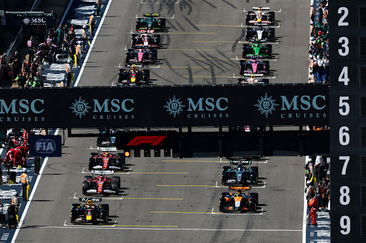

A Formula 1 története röviden
A Formula 1 a világ legismertebb autóverseny-sorozata, amely 1950-ben indult. Az évtizedek során a technológia, a biztonság, az aerodinamika és a motorsport kultúrája óriási fejlődésen ment keresztül. A sport egyszerre szól a sebességről, a mérnöki innovációról, a stratégiáról és a pilóták rendkívüli teljesítményéről.
A Formula 1-ben minden csapat saját autót fejleszt, miközben a szabályok meghatározzák a technikai kereteket. A versenyhétvégék szabadedzésekből, időmérőből és futamból állnak, ahol a pilóták és a konstruktőrök is pontokat gyűjtenek a világbajnokságban.

Csapatok és autóik
Az alábbi kártyák között a nyilakkal lehet lapozni. Minden csapatról rövid információ jelenik meg az istállóról és az autójáról.